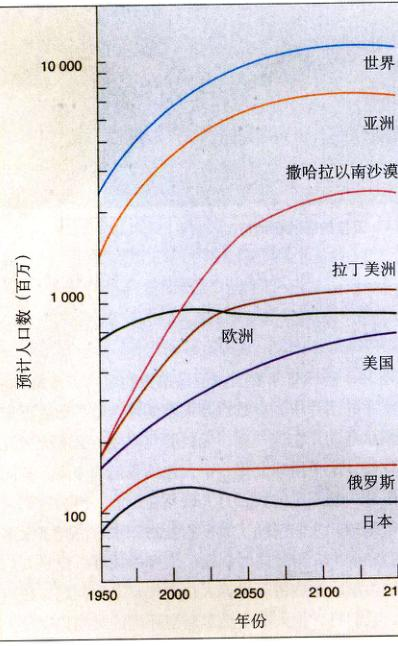
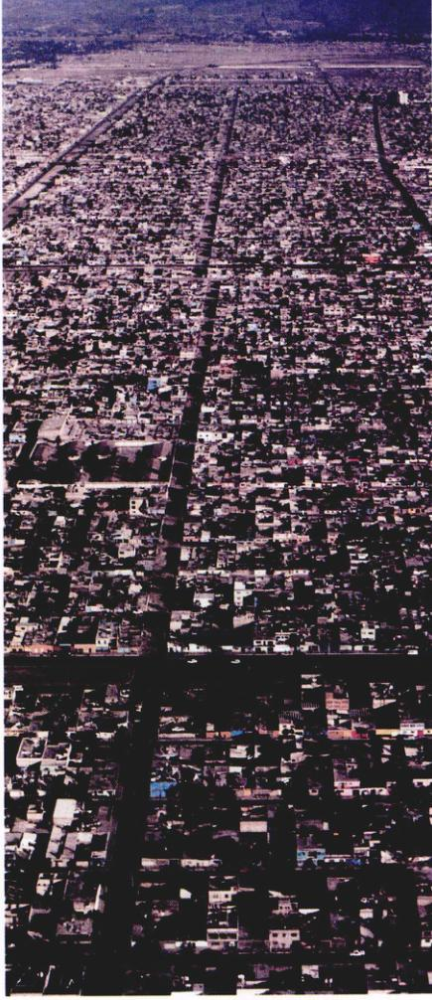
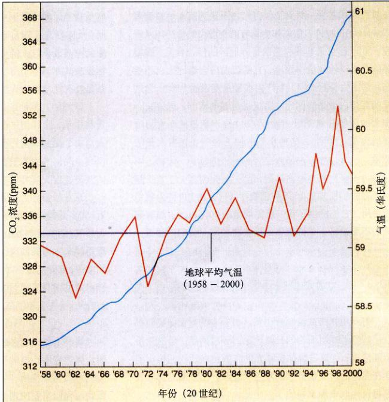
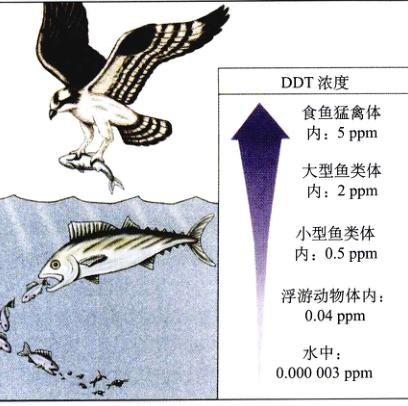
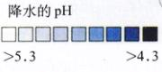
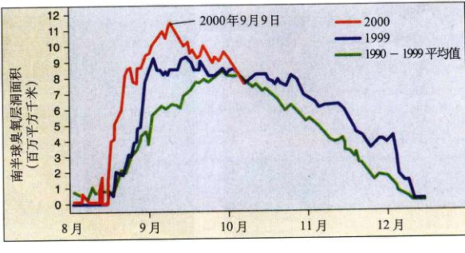
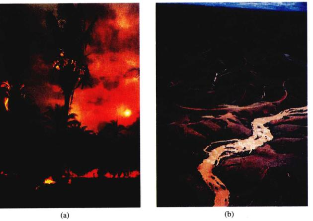
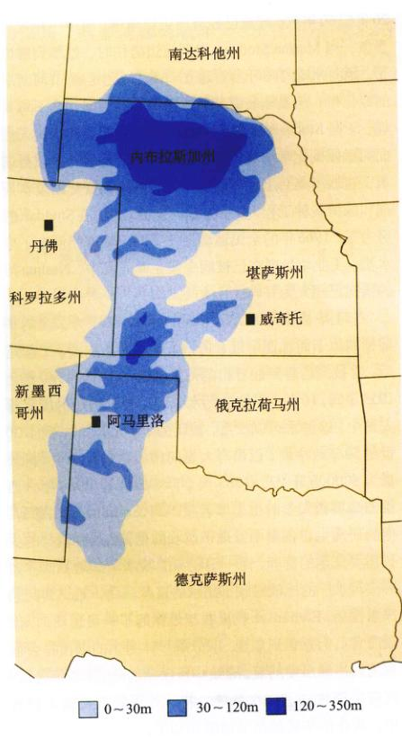

Page 1 / 原始页码 585
第 30 章 生物圈的未来

图 30.1 卫星拍摄的纽约市
图 30.1 是1985年春天由卫星拍摄的纽约市景象。在这幅小小的图片中，有数百万人在喧闹嘈杂着，数百万车俩如潮水涌动；在这一刻，无数婴儿降生，又有无数死者被埋葬。这个星球上每一个人包括我们的未来，都同这张照片中看不见的数百万联系在一起，因为我们只拥有一个地球。人们消耗了太多的食物和水，消耗了太多的能源和矿产，与此同时制造了太多的垃圾。但是人们也有能力解决这些由于世界人口爆炸带来的问题。在本章中，我们将讨论人类生活对周围环境的影响，以及人们为了缓解环境压力而做出的诸多努力——为了我们，也为了我们的子孙。
Page 2 / 原始页码 586
30.1 世界人口在爆炸性地增长
30.1.1 不断增长的人口
当前，世界有 60 亿人口，这给生物圈带来了严峻的考验。人口是怎样变得如此之多的呢？在过去的 300 年中，人口出生率（全球平均水平）一直保持稳定，大约是每年每千人出生 30 人（现在是每年每千人出生 25 人）。但同时，由于卫生状况和医疗技术的改善，死亡率稳步下降，从每年每千人死亡 29 人下降至每年每千人死亡 13 人。所以，虽然出生率保持不变甚至略有下降，人口的显著下降造成了今天如此庞大的人口。每年全球范围内出生率和死亡率的差值可使人口总量增加约 1.4%。这个速度虽然看起来非常小，但按此速度发展下去，只需 39 年世界人口的数量便可翻上一番！
目前，世界人口的年增长量为 7700 万，几乎等于德国目前的所有人口。世界上每天有 20 万人出生，也就是说每分钟超过 140 人！世界人口在目前 60 亿的基础上仍在增长，预计会在 21 世纪稳定在 85 亿 ~ 200 亿之间的某个数值。
1) 未来的趋势
世界人口的 60% 居住在热带或亚热带地区（图 30.2）。另外 20% 在中国，剩余的 20% 则在发达国家：欧洲、前苏联各联邦国、日本、美国、加拿大、澳大利亚和新西兰。发达国家的人口年平均增长率为 0.3%，而大多数发展中国家（不包括中国）的人口年平均增长率为 2.2%（1995年）。1950年，居住在发达国家（例如美国）的一个人对应世界其他地区的两个人；仅仅 70 年以后，即到了 2020 年，这个比例将会变成 1:5。
正如我们在第24章中所讨论的，人口的年龄结构决定了其增长速度。要想预测人口未来的增长趋势，确定其中未到生育年龄的人口的比例至关重要。在发达国家如美国，约有 1/5 的人口处于 15 岁以下；在发展中国家，譬如墨西哥，这个比例是美国的两倍。虽然大多数热带和亚热带国家陆续颁布了限制人口增长的政策，这些国家的人口仍将在 21 世纪持续增长（图 30.3）。发达国家占全世界人口的比例会越来越小。印度在 1995 年拥有 9.3 亿人口（其中 36% 为 15 岁以下），虽然在 2000 年成功地控制了人口生育的速度，它的人口也将持续增长到 21 世纪中叶；按当时人口增长的速度，到 2050 年印度将拥有近 14 亿人口，并且会继续高速增长下去。
2) 人口增长速度已经开始呈下降趋势
联合国已经公布了世界人口增长速度持续下降的消息，从 1965~1970 年的 2.0% 降到了 1998 年的 1.4%。但是，由于基数太大，目前每年人口增加的数量为 7700 万，而 20 世纪 60 年代每年只有 5300 万。
联合国将人口增长比率的下降归功于计划生育、经济的增长和妇女社会地位的提高。虽然联合国赞成美国提出的资助生育工程计划，有些人却对此持反对态度。他们认为如果将钱花在提高教育和刺激经济增长方面会更有效，因为这样做会带来人口意识的普遍提高和人口出生率的下降。联合国虽然支持发展中国家的教育事业，但有趣的是，已有报道表明，随着计划生育的实行，家庭人口数量的减少总是伴随着更高的教育水平。
许多国家正在为降低人口增长速度做出艰苦的努力，这些努力也的确卓有成效。如果这种努力坚持不懈，世

图 30.2 全球人口的预计增长 尽管降低出生率的努力取得了很大进展，本世纪人口仍会增长（数据如上图显示）。增长重心将在撒哈拉以南的非洲，那里是全球最贫穷的地区，人口将超过 20 亿。目前，当地的出生率是每个妇女一生 3 到 5 个以上的孩子，而欧洲和美国的出生率则少于 2.1 个。
资料来源：美国的数据来自人口局的预测。其他数据来自爱德华兄弟：《世界人口预测》，1994—1995年版，约翰·霍普金斯大学出版社，1994。
Page 3 / 原始页码 587
界人口可能在 21 世纪停止增长。没有人知道这个星球到底能养活多少人口，但有一点清楚的是，依靠现有的技术，我们可以养活比现在更多的人。
值得一提的是，人口规模不是决定资源消耗的唯一因素，人均资源消耗量同样起着非常重要的作用。从这个角度来说，生活在发达世界的人更应该注意减轻自身可能带来的负面影响。这是因为，虽然世界人口的大部分集中在发展中国家，但大部分资源却消耗在发达国家。事实上，占世界 20% 的最富裕人口消耗了世界资源的 86%，同时制造出全球 CO₂ 的 53%；而占世界 20% 的最贫穷人口却只消耗了世界资源的 13%，制造出 3% 的 CO₂。从另一个角度来看，一个出生在发达国家的婴儿，他一生所消耗的资源将是出生在发展中国家婴儿的 30~50 倍。
长期持续的发展是人类面临的最紧迫的任务。子孙后代的生活质量很大程度上将取决于我们是否能够成功地限制人口和人均资源的消耗。
30.2 只有发展农业才能支持不断增长的世界人口
30.2.1 农业的未来
目前世界面临的最为严峻和急迫的挑战之一就是需要生产足够的粮食以满足日益增长的人口。这个问题在经济学家们看来并不足为惧，他们估计从 1950 年至今，世界粮食生产增长了 2.6 倍，远高于人口增长的速度。但是，目前几乎所有可用的耕地都已被开垦，世界上许多地区也因为大面积的粮食饥荒导致耕地被破坏，并丧失了可持续发展的潜力。自 1950 年以来，世界良田的 20% 已化为乌有。在这些严峻的现实面前，我们不得不考虑未来农业的发展前景问题。
1) 寻找新的粮食作物
现在究竟有多少种粮食作物？仅仅三种作物——水稻、小麦和玉米——就为人类提供了半数以上的能量需求；仅 100 余种植物就提供了我们所需 90% 以上的热量；只有约 5000 种植物曾被作为食物食用。而在所有的 250 000 种植物中，可能另有上万种植物可供食用——如果我们充分了解了它们的性质并广泛种植的话（图 30.4）。
农业科学家正尝试种植新的作物，尤其是那些可以在世界人口增长最快的热带和亚热带地区生长的良种。当今全世界大量种植的作物几乎都拥有数百年甚至

图 30.3 热带和亚热带地区人口增长最快 世界上最大的城市墨西哥城，拥有 2000 万人口。
Page 4 / 原始页码 588
图 30.4 新的粮食作物 (a) 印加和阿兹提克时代，谷苋 (Amaranth spp.) 是拉丁美洲高原上的重要作物。谷苋生长快，而且含有丰富的赖氨酸，一般的植物蛋白不含赖氨酸，但它却是动物必需的营养物质。(b) 四棱豆 (Psophocarpus tetragonolobus) 是一种热带固氮藤本植物，它具有高营养的叶片和果实，果实里的种子可以提供丰富的食用油。四棱豆最初在新几内亚和东南亚种植，1970 年以后已遍及整个热带地区。
上千年的栽培历史。只有少数几种，如橡胶树和油棕榈，自 1800 年后才被广泛引种。
几乎所有的重要作物都有一个共同的特点，那就是种植方法非常简单。而现在，耕作技术空前发达，我们能够提高土壤肥力、控制害虫，这就为将更多植物作为后备粮食作物提供了条件。农业科学家正在采用最先进的方法系统地寻找适应现代社会多种需要的新作物。
2) 提高现有作物的生产力
寻找新作物是一个漫长的过程。其实，为了应付当前世界不断增长的粮食需要，提高现有农作物的生产力是一个最佳的选择。在人口增长最快并且人口最为贫困的热带和亚热带地区，发展这一对策尤为重要。从发达国家进口粮食并不能满足这些地区人口的需要，因为这只占所需粮食的 8% 左右，但是当地的耕地已经开垦殆尽。在 20 世纪五六十年代，一场绿色革命带来了传统小麦和水稻品种的改良。1950 年到 1970 年，墨西哥小麦产量翻了十番，从小麦进口国一跃变成了出口国。在相同的 20 年里，印度粮食生产的增长率也超过了人口增长，达到每年 2.3%。中国也成了粮食自给国。
虽然绿色革命取得了显著的成效，但粮食形势依然严峻。新品种作物需要消耗大量的能量、化肥、杀虫剂及除草剂，还需要发达的农机设备。举例来说，在美国，生产同样数量的小麦所消耗的能量是印度传统耕种所消耗能量的 1000 倍。
生物学家肩负着提高现有农作物生产力、研究开发新品种的任务。具体来说，就是改进传统的耕种方法，遴选新的、非传统的热带，亚热带农作物（见图 30.4）。
3) 基因工程
基因工程技术（见 19 章）可以创造出抵抗特定除草剂的植物。于是这些除草剂便能更好地除去杂草，而损害农作物。基因工程使农作物在原本不能生长的土地上生长。目前，希望得到的性状正被引入重要的农作物中。例如，转基因水稻含有丰富的维生素 A 和铁，大大地丰富了人类的营养。其他的一些变异使得农作物拥有抗盐碱化、固氮、进行 C₄ 光合途径以及抗虫、抗病等特性。
转基因作物的种植（GM 食品）颇具争议，现在已经引起了全球性的讨论。反对者担心基因工程会带来诸如：过敏、例如遗传多样性的破坏、变异种的逸生、昆虫的生存安全以及对种子公司的威胁等等这些现实或潜在的问题。第 19 章中我们详细讨论了其中的风险。风险固然值得详细考量，但由 1973 年发展至今的转基因技术，在未来的 21 世纪中，必将对农作物产生不可估量的影响。
4) 耕作制度的新探索
几种新的尝试可能对提高农作物产量有所帮助。“免
Page 5 / 原始页码 589
耕农业”是 20 世纪 90 年代在美国和其他一些地区广泛推行的耕作方法，由于保留了表层土壤，成为许多地区理想的农业措施。另一方面，无土栽培 (hydroponics) ——在富含营养的水中栽种植物的方法，更是目前的热门话题。
海洋一度被认为是取之不尽用之不竭的食物来源，但过度捕捞已使得世界捕鱼量逐年下降，因此捕鱼所消耗的能量越来越多。由于对渔业发展的监管不善，滥捕滥捞、局部污染和鱼类栖息地的破坏使得捕鱼量已比历史最高纪录下降了 20%。世界许多重要的渔场现在已经纷纷关闭。例如，北大西洋纽芬兰岛的格兰德湾 (Grand Bank)，曾经是鳕鱼和其他一些鱼类的重要产地，现在这些鱼几乎已经销声匿迹了。1994 年，加拿大政府禁止了所有捕捞鳕鱼的行为，使得 27 000 名渔民失业；同年，美国政府禁止了乔治斯湾 (Georges Bank) 及其他新英格兰水域的捕鱼行为。自 1975 年以来，大西洋的金枪鱼数量已下降了 90%。1993 年，据美国食品与农业组织估计，17 种主要的海洋鱼类中有 13 种濒临灭绝。目前，世界年海洋鱼类捕捞量从 1986 年的 8600 万吨减少到 1992 年的 8250 万吨，虽然捕捞强度在不断增大，捕捞量却在不断下降。
新食品的研究，例如用营养液培养可食的微生物，正日益受到重视。举例来说，光合固氮蓝藻——螺旋藻 (Spirulina) 正被许多国家作为具有商业潜力的食品加以研究。实际上，它是非洲和墨西哥等地区的传统食品。螺旋藻能在强碱性环境中繁衍，它的蛋白质含量比大豆还要高。它生长旺盛，生产力水平是麦田的 10 倍。像这样的高蛋白微生物能为人类提供足够的营养；但是，心理上的障碍必须克服，因为人们往往不容易接受食用这样的食品；而且，这种食品的加工也要耗费耗大量的能量。
30.3 人类活动使得环境压力日益加重
打开电视机或者随意浏览一份杂志的封面，我们都会了解到地球所面临的日益严重的环境问题。虽然只是个别情况，但这些媒体所曝光的赤足以及让我们认识到摆在面前的挑战是多么的艰巨和复杂。在下面的部分我们将讨论其中最重要的一些问题。
30.3.1 核能
1986 年 4 月 26 日凌晨 1 点 24 分，切尔诺贝利核电站四座核反应堆中的一个发生了爆炸。坐落在乌克兰首都基辅以北 100 公里处的切尔诺贝利核电站是欧洲最大的核电站之一，每年可发电 10 亿瓦，可以完全满足一个中等城市的用电需求。4 月 26 日拂晓前，核电站的工人急于完成一项测试，判断在电力减少的情况下 4 号反应堆的运转情况。他们选择了一条愚蠢的捷径：关闭所有的一系列紧急安全系统，以便在输出功率较低时关闭反应堆。因为此时反应堆核心是不稳定的——而工人们恰恰关闭了这些紧急安全系统。测试中也曾出现过激烈的能量波动，但是却没有重水来减速；能量在极短的时间内达到了上限的数百倍，相当于 1 吨炸药的白热化冲击融化了部分燃料棒，被加热的蒸汽急速膨胀，从而引起了整个反应堆的爆炸。
爆炸和热量将数吨的二氧化铀燃料和裂变产物的烟云推至 5km 的高空，释放了超过 1 亿居里的放射性辐射，成为历史上最严重的核事故。与之相比，1979 年宾夕法尼亚三英里岛事故只泄漏了 17 居里的放射源，只有前者的几百万分之一。放射烟云向西北和东南方向扩散，放射物质覆盖了整个欧洲中部，从俄联的纳维亚半岛直到希腊。反应堆方圆 30 km 以内的区域内约有 24 000 人口，其中至少有五分之一接受了过多的放射剂量 (大于 45 rem)。污染。31 人由于放射汁染直接导致死亡，他们中绝大多数是扑灭反应堆大火的消防队员。
欧洲的其他地区也受到了严重的放射剂量污染。有资料显示，紧邻切尔诺贝利的地区将有 5000 ~ 75 000 的人口由于受到放射污染而死于癌症。
Page 6 / 原始页码 590
核能能够提供足够量的新能源，但在对其进行充分利用前必须明确确认几个重要问题。首先，世界上约 390 座核反应堆的安全必须得到保障。其次，如何妥善处理放射性废料和服役期已满的核电站（约 25 年）也是一个重要的问题。1997 年，全世界已有超过 35 座核电站运行时间超过了 25 年，但没有一座被安全关闭，核废料也没有妥善掩埋。第三，必须提防恐怖主义和蓄意破坏，因为核能发电技术与核武器有着紧密的联系。
研究和探索化石燃料的替代物（太阳能和风能）是极为重要的，另一个重要的方面是能量的高效利用。据劳伦斯-贝克利实验室估计，美国排放的温室气体中，有约 15% 来自于发电所用的化石燃料的燃烧，而美国和加拿大 75% 的电力由于低效使用而被浪费。使用高效的汽车、电灯、电热炉、空调和冰箱可以节省大量的能源，同时极大地减少温室气体的排放。举例来说，一种新的小型荧光灯泡提供同等强度甚至更亮的光线时，只消耗普通灯泡所耗能源的 20%，而其寿命是后者的 13 倍，这既节约了能源，同时也节省了很多的费用。
30.3.2 二氧化碳与全球变暖
通过对地球历史的研究和其他行星的比较，科学家们发现，大气中气体——尤其是二氧化碳——的聚集可以保持温度，使地面平均温度比没有这些气体时高约 25°C。二氧化碳和其他气体能够将地表辐射的红外线（或称之为热量）中的长波部分俘获，造成温室效应 (Greenhouse effect)（图 30.5）。在这种情况下，整个大气就像罩在地球外面的一 个玻璃大温室。
存在于化石燃料中的碳大概是目前大气中的 7 倍。在工业化以前，大气中二氧化碳浓度约为 260 ~ 280 ppm。随着化石燃料的广泛使用，大气中二氧化碳浓度急剧上升。自 1958 年后的 25 年中，二氧化碳浓度从 315 ppm 上升到 340 ppm 以上，而且还在不断增加之中。根据气

图 30.5 温室效应 自 20 世纪 50 年代后，大气中的二氧化碳浓度持续增长（蓝色曲线）。红色曲线代表同时期地球平均气温的增加。
资料来源：美国地球物理联合会、国家自然科学院、国家大气研究中心。
Page 7 / 原始页码 591
象学家的计算，自 1900 年以来全球实际平均气温已经上升了 1°C，这被称为全球变暖 (global warming)。
美国国家研究局 (National Research Council) 最近预测，到 21 世纪 70 年代中期，大气中二氧化碳的浓度将超过 600 ppm（几乎是现有水平的两倍），甚至可能在 2035 年就超过这个水平。如果是这样，地表空气温度就将上升 1.5 ~ 4.5°C。而且，实际的温度增长可能还要高，因为许多痕量气体，如氧化亚氮、甲烷、臭氧和氟氯烃，同样由于人类活动而大量增加，这些气体和二氧化碳一样能够引起温室效应。其中的一种气体——甲烷，在大气中的浓度由 1951 年的 1.14 ppm 增加到 1986 年的 1.68 ppm ——增长了近 50%。
气候变暖引起的主要问题之一是海平面升高。自全球变暖以来，海平面已经升高了约 2 ~ 5 cm。如果气候变暖使得极地冰层融化的程度，海平面将升高 150 m 以上，平均入侵陆地几百千米，可以淹没整个北美洲的大西洋海岸。
全球变暖带来的降水变化很难预料。但毫无疑问的是，气候变暖将使优良的耕地变得干旱。如果气候变暖如许多科学家预测的那样迅速，未来的 50 年中我们将遭遇剧烈变化的天气、不断升高的海平面和肥沃耕地的持续消失。
30.3.3 污染
莱茵河流经欧洲中心，它从意大利与瑞士分界处的阿尔卑斯山上流下，向北穿过德国的工业区和荷兰，最终汇入大海。在它流经的德国梅兹和科布伦兹山区，莱茵河景致宜人，是世界上最美丽的河流之一。但在 1986 年 11 月的第一天，莱茵河几乎濒临灭亡。
那天，莱茵河中的生物所遭受的打击最初看似并非致命的。早晨，瑞士巴塞尔的消防队员正努力同一场大火搏斗。大火正摧毁着一座大型仓库，它属于桑德兹一家大型化工公司。由于情况紧急，没有人想到仓库里到底储存着什么化学物质，消防队员们发射了数条水柱以扑灭熊熊烈火。当大火被扑灭的时候，已有 30 吨水银和杀虫剂随着水流流入莱茵河中。
剧毒物质随流而下，杀死了河中所有的生物。数百公里的河面上，到处漂浮着死鱼，甚至连河边的植物也开始死亡。许多以莱茵河为水源的城市没有时间采取其他的应对措施。从瑞士经整个德国到入海口，河中散

图 30.6 DDT 的生物放大作用 由于 DDT 能在动物脂肪中积累，它的浓度随着食物链中营养级的升高而不断增加。在美国禁止使用 DDT 之前，猛禽类的数量急剧下降，原因就是 DDT 使得它们的卵壳薄而易碎，在孵卵时容易打破。
发着死鱼腐烂的臭气，没有一滴水可以安全饮用的水。
6个月后，瑞士和德国负责调查这场事故的科学家声称，莱茵河所受的破坏并不是不可恢复的，仍有足够的小型水生无脊椎动物和植物幸存下来，为鱼类和其他水生生命的恢复提供了基础，而且河水也可以很快的速度将这次破坏的残余物冲走。莱茵河的悲剧警示了瑞士和德国政府，必须加强对沿岸工业点的控制，以保护河流不再承受将来可能发生的事故的影响。
污染的威胁
从纽约的拉夫运河 (Love Canal) 到弗吉尼亚的詹姆斯河 (James River) 再到密苏里泰晤士湾 (Times Beach)，莱茵河的污染事件足以警醒整个工业世界。当然，不是所有威胁生命的污染物都是剧毒的，许多污染物质是随着分解成小块的氯乙烯。几乎所有曾经生产出的塑料还在我们身边，只不过从一种形式变成另一种形式。随着数量越来越多，它们成了新的污染源。
高技术的现代农业将许多新的化学物质引入到生态系统中，包括杀虫剂、除草剂和化肥等。美国等一些工业化国家正努力控制这些化学物质的副作用。不幸的是，许多现在已经停产的有毒化学物质仍在生态系统中循环，例如氯代烃。
氯代烃是 DDT、科洛丹 (chlordane)、林丹 (lindane)、
Page 8 / 原始页码 592
狄氏剂等一类化学物质的总称，它们曾经被广泛使用，现在在美国已全面禁止使用。氯代烃分解极慢且能在动物脂肪内积累。更为可怕的是，当随着食物链流动时，它们能够不断积累，这称为生物放大作用 (biological magnification)（图 30.6）。20 世纪 60 年代后期，DDT 在美国和其他一些地方导致了许多捕食性鸟类产出脆壳蛋，从那时开始，它被及时禁止了。氯代烃还有一些副作用，并能在动物体内产生类似激素的作用，扰乱了正常的激素调节，有时甚至造成严重的后果。
30.3.4 酸雨
新墨西哥的佛尔科纳电站每天燃烧大量的煤，通过高达 65 m 的烟囱将废烟排放到大气中。这些废烟含有大量二氧化硫和硫化氢，同空气中的水蒸气反应便生成酸。设计高烟囱的目的当然是为了将这些富含硫的烟送到大气中，再由风带到远方。
空气酸度过高带来了十分严重的环境问题。排放到大气中的硫遇水生成硫酸，当水蒸气凝成雨降到地面时，便形成酸雨 (acid rain)。正常雨水的 pH 值很少低于 5.6，但在美国东北部，雨或雪的 pH 值都在 3.8 左右，酸度约是正常值的 100 倍（图 30.7）。
酸雨威胁着生命的存活，pH 值低于 5.0 时，许多鱼类和水生动物都会因无法繁殖而灭绝。瑞典南部和挪威数以千计的湖泊已看不到鱼虾，这些湖泊平静得令人毛骨悚然。在美国东北部和加拿大东部，成千上万的湖泊受酸雨的影响。在瑞典南部的一些地方，由于酸雨慢慢地渗透进地下岩层的储水层中，地下水的 pH 值只有 4.0 ~ 6.0。
德国的布莱克森林、美国东北和加拿大东大的森林已受到了严重的损害。据估计，北半球森林中至少有 350 万公顷正遭受酸雨的破坏（图 30.8），而且情况还在不断恶化。
解决酸雨问题的办法似乎很简单：将烟尘集中起来处理掉，而不是将它排放到大气中。但是，方案实施起来却有许多问题。首先，这需要大量的资金。全国安装和维修清洗系统的费用估计高达 40 亿 ~ 50 亿美元。此外，由于污染排放者和污染受害者相距甚远，哪一方都不愿花钱，因为在他们看来，那是别人的问题。美国 1990 年颁布的清新空气法第一次就酸雨问题作出了正式的规定，为解决全球酸雨问题迈出了实质性的一步。

图 30.7 美国各地雨水的 pH 值 美国各地的降水，尤其是东北部，酸度远高于自然雨水，pH 值在 5.6 左右。

图 30.8 田纳西州 Clingman's Dome 地区的森林遭受破坏 酸雨使树木抵抗力下降，易受虫害影响。
Page 9 / 原始页码 593
30.3.5 臭氧层空洞
臭氧 (O₃) 是除氧气 (O₂) 外的另一种氧形式。图 30.9 是从卫星上拍摄的南极照片，其中的不同颜色代表了臭氧的不同浓度。正如你看到的，南极上空有一个面积接近 3 个美国大小的臭氧洞 (ozone hole)，那里的臭氧浓度远低于其他地方。臭氧层变薄最早出现在 1975 年，空洞不是长期性的，而只是在冬天的几个月中才会出现。1975 年以后的每年 9 月，臭氧洞都会出现，每年臭氧层都会变得更薄，空洞也变得越来越大。
1974 年，Sherwood Roland 和 Mario Molina 提出了臭氧层空洞的解释，他们因此荣获了 1995 年的诺贝尔化学奖。他们认为，制冷系统和消防器具所使用的一种惰性化学物质——氟氯烃 (CFC) 是破坏臭氧层的凶手，这些气体向上穿过大气层，将 O₃ 分子还原成 O₂。每个 CFC 分子中的一个氯原子可以破坏 10 万个臭氧分子：
紫外照射使 CFC 释放 Cl 原子
CCl₂F —(UV)→ Cl + CCl₂F
紫外线产生氧自由基
O₂ —→ 2O
Cl 原子和 O 自由基与臭氧相互作用：
2Cl + 2O₃ —→ 2ClO + 2O₂
2ClO + 2O —→ 2Cl + 2O₂
净反应：2O₃ —→ 3O₂
虽然还存在其他导致臭氧空洞的因素，但 CFC 才是罪魁祸首已成为公认的事实，因此在全球范围内已经逐步禁止生产。1995 年美国已下令禁止 CFC 和其他破坏臭氧层的化学物质的生产。尽管如此，以前生产出的 CFC 仍然慢慢地扩散到大气中，臭氧层还将受到更多的破坏，直至它重新开始恢复。
臭氧层位于距离地面 25 ~ 40 km 处的平流层。这层臭氧保护地球上的生命不受来自太阳的持续不断的紫外照射的影响。只有当大气层拥有足够的修补阻挡这些致命射线的臭氧后，地球生命才得以出现。
紫外辐射严重影响了人们的健康。据估计，大气中臭氧浓度每下降 1%，皮肤癌发病率就会上升 6%。在中纬度地区，臭氧层浓度已经减少了 3%，而皮肤癌的发病率估计将高达 20%。像黑色素瘤这样的皮肤癌是足以致命的疾病之一。

图 30.9 南极上空的臭氧空洞正不断扩大 几十年来美国航空航天中心记录下了南极上空臭氧层消失的趋势。在南极的冬季，由于太阳光能发笼罩在其上空的冷空气发生化学反应，自 1975 年以来，每年 8 月，在南极上空都会出现臭氧空洞。空洞在 9 月继续扩大，直到 11 月、12 月气温回升时才逐渐好转。2000 年，面积达 1140 万平方公里的空洞（卫星照片上的深紫色）覆盖了比美国、加拿大和墨西哥加起来还要广阔的区域，成为有记载以来的最大空洞。2000 年 9 月，空洞扩展到智利南部一个拥有 12 万人口的名为 Punta Arenas 的城市，将整个城市的居民暴露在强烈的紫外照射下。
Page 10 / 原始页码 594
30.3.6 热带雨林的破坏
世界人口半数以上居住在热带，这个比例还在迅速增加。为了全球的稳定和全球生态系统的可持续发展，解决这些地区的粮食生产和区域稳定性问题十分必要。世界贸易、政治和经济的稳定，世界上大多数动植物、真菌和微生物的未来，都依赖于我们对这些问题的妥善解决。
1) 雨林正迅速消失
热带雨林是世界上生物多样性最丰富的生态系统。绝大多数热带森林，如季节性干旱森林和萨王那森林，已经被严重破坏了。因为它们拥有肥沃的土壤，人类很早以前就将其开垦。现在，土壤贫瘠的雨林也遭到了破坏。20 世纪 90 年代中期，估计只有约 5500 万平方公里的热带雨林处于未受干扰的状态。这片面积约为美国（包括阿拉斯加）三分之一的地区，只相当于最初雨林资源的一半。即便是些剩余的雨林，每年也约有 16 万平方公里被砍伐；同时有等量的雨林由于耕种、伐樵和放牧而受到严重影响。每年被破坏的雨林的总面积——并且因此将永远从陆地上消失的面积——比印第安那州的面积还大。照此速度，世界热带雨林将在 30 年内彻底消失；而在许多地区，破坏的速度远不止如此。过度开发带来了严重的后果，专家预测，原始热带雨林（未受任何人类活动影响的雨林）在 21 世纪前叶将所剩无几。到那时，一度茂盛而物种丰富的森林或许仍有树木，但它的物种多样性将不复存在。
2) 一个严重的问题
热带雨林的消失不仅意味着生物多样性的悲剧性破坏，森林消失本身也是一个十分严重的问题。热带雨林是复杂、高产的生态系统，经过数百万年的进化已经适应了当地的环境。当人们在北温带地区将一片森林开垦为牧场的时候，土地能为几代人提供丰富的生产力。但在热带多数地区，人们这样做的时候，结果往往相反。当一片热带森林被砍伐时，我们对资源只能消费一次，不能再重新使用（图 30.10）。这片上百万年才积累起来的复杂生态系统正遭受毁灭，而人类却木然无知。
目前，生物学家必须更多地研究可持续发展的农业生态系统，以满足热带和亚热带地区人们的需要。我们在前两章中涉及的生态学概念是普遍的原则，原始的热带雨林拥有地球上所有植物群落中最高效的净初级生产力，因此我们迫切需要找到明智的可持续发展策略，使雨林能够更好地为人类提供服务。

图 30.10 热带雨林的破坏 (a) 热带雨林的消失将会带来灾难性的生态后果。为了放牧，这些大火烧毁了巴西的热带雨林。(b) 从这些厄瓜多尔的中海拔山区可以看到被破坏森林的结果。这些地区在 20 世纪 70 年代原本是含蓄水土的高产森林，而现在变成了贫瘠的草场，生产力低下，表层土壤大量流失（注意河水的颜色，由于水土流失严重而呈棕黄色）。
Page 11 / 原始页码 595
30.4 解决环境问题需要每一个人的努力
30.4.1 环境科学
环境学家从各个角度考虑环境问题，尝试解决它的方法。与研究生命现象普遍规律的生物学和生态学不同，环境学致力于解决更加实际的问题，它的基础工具来源于生态学、地理学、气象学、社会科学和其他许多涉及环境-人类相互关系的知识领域。环境科学提出了由于人口迅速增长而引发的问题：不断增长的能量需求、资源的消耗和日益严重的污染。
1) 解决环境问题
我们反复强调的地球环境问题并不是不可解决的。科学研究和公众的关心一旦结合起来，便没有不能解决的问题。简要概括起来，解决环境问题一共有五个步骤。
(1) 总体评估：提出任何环境问题的第一步都是科学地搜集信息并进行分析。我们必须通过收集数据和初步实验来建立描述当前状况的模型，这样的模型能够预测未来的发展趋势。
(2) 风险分析：通过科学的分析，我们可以预测某种特定行为的可能结果。我们不仅要预估解决一个环境问题可能的方法，还要考虑到一个计划可能带来的负面影响。
(3) 大众宣传：如果我们在这个多解决方法中作出了选择，就应当向大众做出宣传。这包括大众能够接受的方式说明方案的可行性，还包括解释不同方案在费用和效果上的区别。
(4) 政府策略：大众是通过他们选出的政府实施方案的。如果方案的实施超出了国家，则会出现许多新的困难。
(5) 后续工作：我们应当密切关注每个方案实施的结果，看它是否解决了问题，是否需要对其有所改进。所有的方案都只是一个实验，我们需要收集数据对其进行评估以改进未来的模型。
2) 每个人都是重要的
全球环境问题的解决一部分依靠政治家、经济学家、银行家和工程师——需要公众的参与和经济上的支持。但是，我们决不能忽视个人在解决环境问题中所起的重要作用，某一个人的努力会使事情的结果变得截然不同。下面是两个生动的例子。
(1) Nashua 河：20 世纪初，流经新英格兰中心地带的 Nashua 河曾被马萨诸塞州的新城市严重污染。到了 20 世纪 60 年代，河流已经被污染物堵塞，河中一片死亡景象。当 Marion Stoddart 搬到河边居住时，她感到震惊了。她向州政府呼吁沿河建立一条“绿色走廊”（河两岸的绿化带），但是州政府对买下河边的土地丝毫不感兴趣。于是 Stoddart 建立了 Nashua 清理委员会，禁止人们向河里倾倒化学垃圾。委员会将污染的水送呈议会议员，在城镇集会上宣传环保，呼吁商人出资赞助废料处理和树木栽种工程，着手处理河中的垃圾。在 Stoddart 的努力下，1966 年的全民运动促使马萨诸塞州颁布了净水法。工业垃圾现在已被明令禁止倾入河中，Nashua 河的情况已经大为好转。
(2) 华盛顿湖 (Lake Washington)：86 平方公里的华盛顿湖位于西雅图附近，是一个很深的淡水湖。二战过后，它被雨后春笋般冒出的郊区楼房所包围。1940 年至 1953 年间，10 多个当地的污水处理厂将处理过的废水排入湖中，这些水可以饮用，被认为是“无害的”。到了 20 世纪 50 年代中期，已有大量的排放物进入水中（排放量为 8000 万升 / 天 × 365 天 / 年 × 10 年）。1954 年，西雅图华盛顿大学的生态学教授 W.T.Edmonson 注意到，他的研究生在该湖中发现了丝状的蓝藻。这种藻类的生长需要充足的营养，而一般较深的湖水都是寡营养湖——污水的排放导致了湖水的富营养化！意识到问题严重性后，Edmonson 教授在当地掀起了一场运动，以让政府官员们意识到危险：以分解尸体为生的细菌将会很快消耗掉湖水中的氧，导致华盛顿湖的死亡！5 年之后，政府出资建立了排水系统，将处理物直接输送到海中。现在的华盛顿湖又清澈如初了。
30.4.2 保护不可再生资源
在生态系统遭受破坏的过程中，有一类问题远比其他的要严重——不可再生资源的消耗或破坏。一条被污染的溪流可以经过治理重新清澈，一个灭绝的物种却不可能再生。在美国，我们正以危险的速度消耗着三种不可再生资源：表层土壤、地下水和生物多样性。在这一节中，我们将简单讨论一下前两种资源，第三种资源将在下章中详细介绍。
1) 表层土壤
美国是世界上农业最发达的国家之一，这很大程度上是因为它的广大陆地为肥沃的表层土壤所覆盖。美国
Page 12 / 原始页码 596

图 30.11 奥加拉拉蓄水层 这个巨大的地下水库横跨 8 个州，主要分布于德克萨斯州、堪萨斯州和内布拉斯加州。由于灌溉而过度开采使得某些地区的水平面下降了 30 m。无休止的滥采威胁到了奥加拉拉蓄水层的前途，而使蓄水层恢复需要数百年甚至上千年的时间。
的中西部农业带正位于从前的大草原位置，草原生态系统的表层土壤 (Topsoil) 日积月累，沉积了无数代动植物的尸体。到了人类开始耕作的时候，肥沃的表层土壤已达数英尺之厚。
我们不能使肥沃的土壤再生，但我们却任其——国家繁荣的资本——以每年数十厘米的速度流失。为了除草而反复翻犁，越来越多的表层土壤被雨水冲刷进江河，最终流入大海中。从 1950 年至今，美国已经流失了近四分之一的土壤！我们急需找到挽救土壤的方法，这包括利用基因工程使作物不受除草剂影响以减少翻犁除草带来的土壤流失，另外，通过规划梯田以减少土壤损失也是值得考虑的方法。
2) 地下水
另一种不可再生资源位于表层土壤下，即存在于由多孔岩石组成的蓄水层中的地下水 (groundwater)（图 30.11）。在 12 000 年前的上一次冰川时期，水慢慢渗入地下形成地下水。我们不应该挥霍这宝贵的财富，因为我们不能使它再生。
在美国的很多地方，政府几乎没有对地下水的使用进行控制，结果，大量的地下水被用来灌溉草坪、清洗车辆和制作喷泉。由于化学废料的粗糙处理，更多的地下水已被污染——而这种污染几乎是不可能被治理的。
Page 13 / 原始页码 597
小 结
30.1 世界人口在爆炸性地增长
- 全球人口增长率已有所减少，但全球每年仍增加 7700 万人口。照此下去，39 年后全球人口就会变成现在的两倍。
- 爆炸性增长的人口给环境带来沉重压力。发达国家消耗资源的速度高于发展中国家，如此快的资源消耗是地球无法承受的，它同人口过剩一样值得关注。
30.2 只有发展农业才能支持不断增长的世界人口
- 虽然仍在探索新的农作物，但是现在更多的努力集中在提高现有农作物的生产力上。
30.3 人类活动使得环境压力日益加重
- 人类活动使得环境面临诸多挑战。
- 化石燃料的燃烧排放二氧化碳，从而导致了世界气温的升高和天气、海平面的变化。
- 向河流在探索高污染物质导致了水生生态系统的破坏，同时也影响了人类的用水。
- 氟氯烃的释放破坏了大气中的臭氧层，将地表暴露在紫外线的照射之下。
- 将热带雨林砍伐和焚烧以开垦牧场和耕地，造成了大批物种的灭绝。
30.4 解决环境问题需要每一个人的努力
- 我们能够而且必须了解未来将面临的挑战。现在，环境学家和关心环境问题的人们正积极地寻找解决这些问题的建设性方法。
问 题
- 在讨论资源消耗问题时，为什么对发达国家人口的关注程度比对发展中国家人口的关注程度更高？
- 哪三种农作物为人们提供了半数以上的粮食？又有多少种植物提供了 90% 以上粮食？
- 在放心利用核能之前，我们应当解决什么问题？
- 为什么氯代烃在美国被禁止？为什么现在仍能在水果和蔬菜上发现残留的氯代烃？
- 酸雨是怎样形成的？解决酸雨问题究竟有什么样的困难？
- 什么是臭氧层？它是怎样形成的？臭氧层的破坏会带来什么后果？臭氧层破坏的主要原因是什么？
- 你将会采取怎样的行动来为解决世界环境问题做出贡献？
媒体资源
- 食物生产
- 全球变暖
- 生物富集
- 酸雨
- 臭氧层消耗
- 人类对环境的影响
- 核能
- 化石燃料
- 水质
- 生物放大
- 杀虫剂
- 技能测验：酸雨的形成、温室效应
- 科学家视角：生命的某些
- “科学”专栏：DIY 环保主义